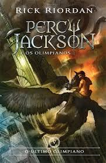
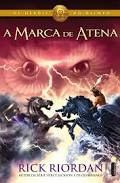
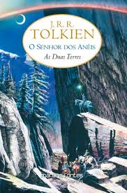

Liga e Desliga

Liga e Desliga
Passe o mouse em cima da Imagem
SINOPSE: Em busca de uma poção para salvar a vida de sua mãe, Clary deve viajar até a Cidade de Vidro, lar ancestral dos Caçadores de Sombras. Mas à medida que se aproxima de Ragnor Fell, o feiticeiro que pode curar a mãe, ela descobre segredos sobre seu passado e o de Jace - e o irmão não hesita em deixar claro que não a quer por perto. Isso Clary já entendeu, ela só não imagina que está prestes a participar de uma batalha épica, na qual Caçadores de Sombras e integrantes do Submundo terão que se unir se quiserem sobreviver. |
 |
SINOPSE: Percy e Luke mergulham no rio Estige e são atingidos pela “Maldição de Aquiles”. Percy Jackson e seus amigos lutam em uma guerra assemelhando-se a guerra inicial entre os deuses gregos e os Titãs e em uma batalha final com o poderoso Titã, Cronos. Eles finalmente derrotam Cronos e o Olimpo é salvo.
A fim de igualar suas chances contra o Titã Cronos, que habita o corpo do seu antigo amigo Luke, Percy toma uma perigosa decisão e arrisca sua vida para se tornar mais forte e poder derrotar o senhor dos Titãs. Enquanto isso, Annabeth e os outros do acampamento fazem vigília em frente ao Empire State, enquanto Cronos se aproxima para a grande batalha.
Percy entrega a faca de Annabeth para Luke, que se mata atingido seu “calcanhar de Aquiles”. A ‘lâmina maldita’ da profecia era a faca que Luke deu para Annabeth. |
 |
SINOPSE: Annabeth está apavorada. Justo quando ela está prestes a reencontrar Percy – após seis meses afastados por culpa de Hera -, o Acampamento Júpiter parece estar se preparando para o combate. A bordo do Argo II com os amigos Jason, Piper e Leo, ela não pode culpar os semideuses romanos por pensarem que o navio é uma arma de guerra grega: afinal, com um dragão de bronze fumegante como figura de proa, a fantástica criação de Leo não parece mesmo nada amigável. Annabeth só pode torcer para que os romanos vejam seu pretor Jason na embarcação e compreendam que os visitantes do Acampamento Meio-Sangue estão ali em missão de paz. Os problemas de Annabeth não param por aí – ela carrega no bolso um presente da mãe, que veio acompanhado de uma ordem intimidadora: Siga a Marca de Atena. Vingue-me. A guerreira já carrega nas costas o peso da profecia que mandará sete semideuses em busca das Portas da Morte. O que mais Atena poderia querer dela? O maior medo de Annabeth, no entanto, é que Percy tenha mudado. E se ele já estiver habituado demais aos costumes romanos? Será que ainda precisará dos velhos amigos? Como filha da deusa da guerra e da sabedoria, Annabeth sabe que nasceu para liderar; no entanto, também sabe que nunca mais vai querer viver sem o Cabeça de Alga. |
 |
SINOPSE: Ao fim da primeira parte, em "A Sociedade do Anel", acontece a separação da comitiva que fora designada em Valfenda para acompanhar o portador do Um Anel. Com o início deste segundo volume, as aventuras passam a correr em paralelo. Frodo e Sam partem com destino a Mordor, enquanto Aragorn, Legolas e Gimli seguem numa empreitada veloz em busca de Merry e Pippin, sequestrados após um ataque de orcs a serviço de Saruman e de Sauron.
Nesta segunda parte, dando sequência ao volume anterior, deparamo-nos com Aragorn, Legolas e Gimli encontrando Éomer e os cavaleiros de Rohan. Após conseguirem a ajuda dos rohirrim, os três guerreiros seguem em busca dos dois hobbits levados pelos orcs.
Depois de uma série de surpresas, encontram finalmente Gandalf, que havia permanecido em Moria enfrentando o temido Balrog. Descobrem, através do mago, que Merry e Pippin estavam a salvos, marchando com criaturas antigas, os ents, a caminho de Isengard, terra de onde Saruman passara a operar sua maldade. |